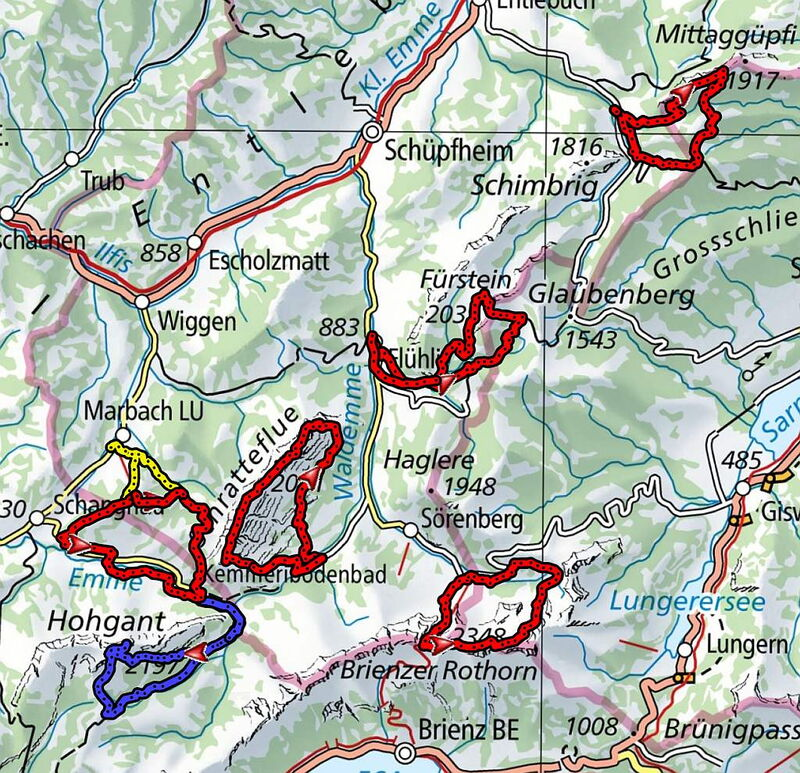

Laufwoche im Entlebuch
Laufwoche im Entlebuch vom Samstag 15. bis Samstag 22. Mai
Das Entlebuch bietet alles was wir suchen für eine erlebnisreiche Laufwoche. Joschi hat mit seinen guten Ortskenntnissen bereits eine schöne Auswahl an Trailtouren ausgelesen. Das Hotel Sporting in Marbach LU freut sich unsere Gruppe im charmanten Entlebuch begrüssen zu dürfen. Die Alpinrunner Laufleiter sind hochmotiviert die vielseitige Landschaft im Gebiet der Biosphäre Entlebuch zu erkunden.
Bericht vom Anreisetag Samstag > zum Bericht
Bericht vom Sonntag zum Bericht / Video von Christian Eindrücke vom Sonntag
Bericht vom Montag zum Bericht / Video von Christian Eindrücke vom Montag
Bericht vom Dienstag zum Bericht / Video von Christian Eindrücke vom Dienstag
Bericht vom Donnerstag zum Bericht / Video von Christian Eindrücke vom Donnertsag
Bericht vom Freitag zum Bericht / Video von Christian Eindrücke vom Freitag
Teilnehmerliste
- Marco und Petra Jäger
- Joschi Furrer und Nartano Kottmann
- Brigitte Eggerling und Thomas Pfeffer
- Martin und Jsabella Lüönd
- Barbara Miller und Robi Rickli
- Chrigel und Bea Hernach
- Albert Thöni & Helen Arquint
- Monica und Peter Hug
- Christian Schmid - Thomas Steger
- Ruedi Wirz und Dani Zähner
- Katharina Fodor und Rolf Bianco bis Montag
- Silvia Pasina bis Montag
- Urs Ullmann
- Petra Bättig
- Corina Müller Nüesch
- Beatrice Altmann
- Jean-Marie Zogg
- Sabine Haas
- Barbara Rutz
- Christine Cantieni
Webcam Marbachegg 1470 M.ü.M
Die geplante Strecken / wegen Schnee einige Anpassungen gemacht
Die Laufleiter haben die Strecken sorgfältig geplant und teilweise bereits erkundet, mögliche Änderungen im Programm werden vor Ort entschieden und mitgeteilt. Die Teilnehmer halten sich an die Weisungen der Laufleiter. Das Mitführen der Tagesverpflegung und Getränk ist jeder selber verantwortlich. Je nach Wetter kann das Programm angepasst werden.
Samstag – zur Strecke
Ankunft in Marbach mit anschliessender Erkundungsrunde in Marbach-Marbachegg
Laufzeit ca.2 1/2 Std. 10 Km +/- 680 hm anschliessend Bezug der Zimmer, Apéro mit Info
Sonntag – zur Strecke
Fahrt nach Ferienhaus SCE Wagliseiboden 35 Min, Rund um die Schratteflue
Laufzeit ca.5 1/2 Std. 19 Km +/- 1480 hm
Montag – zur Strecke
Fahrt nach Gfellen 35 Min, die Ausläufer vom Pilatus Gfellen-Tripolithütte-Gfellen
Laufzeit ca. 4 1/2 Std. 16,5 Km +/- 1260 hm
Dienstag – zur Strecke
Fahrt nach Sörenberg-Schönenboden 35 Min, Brienzer Rothorn
Laufzeit ca. 4 1/2 Std. 16,5 Km +/- 1485 hm
Mittwoch – Ruhetag
zur freien Verfügung / evt. Kambly Besuch Trubschachen, oder Bergkäserei Führung
Donnerstag – zur Strecke
Fahrt nach Flühli 25 Min, Sewenseeli – Fürstein
Laufzeit ca. 4 1/2 Std. 20,5 Km +/- 1385 hm
Freitag – zur Strecke
Fahrt nach Kemmeribodenbad 15 Min, Kemmeribodenbad-Hohgant
Laufzeit ca.5 1/2 Std. 21,5 Km +/- 1500 hm
Samstag – zur Strecke
Fahrt mit Luftseilbahn zur Marbachegg – Kemmeribodenbad – Marbachegg
Laufzeit ca. 4 Std. 18,5 Km +/- 1050 hm anschliessend Heimreise
Streckenübersicht
